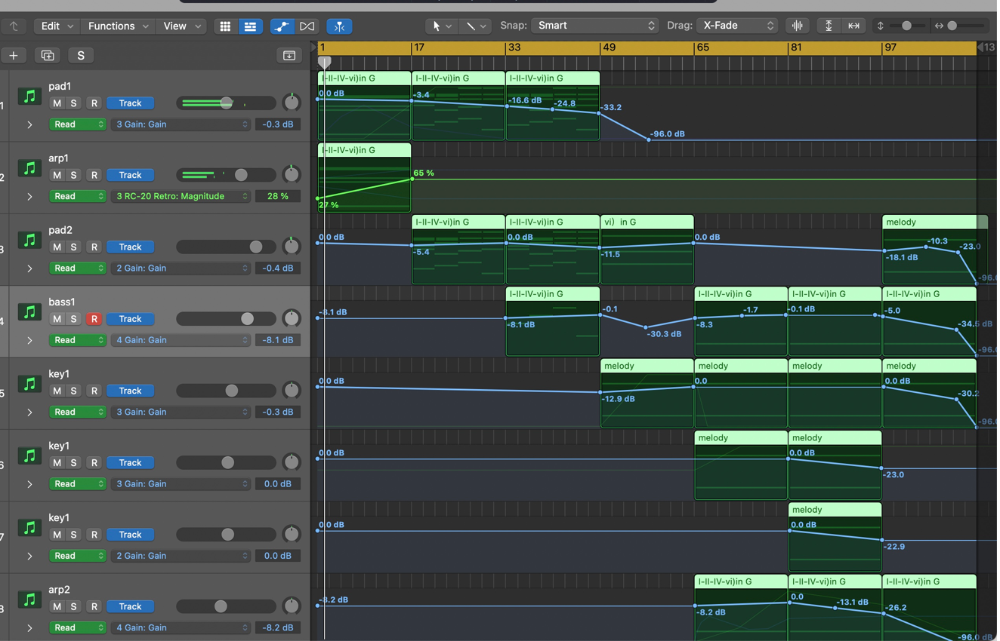
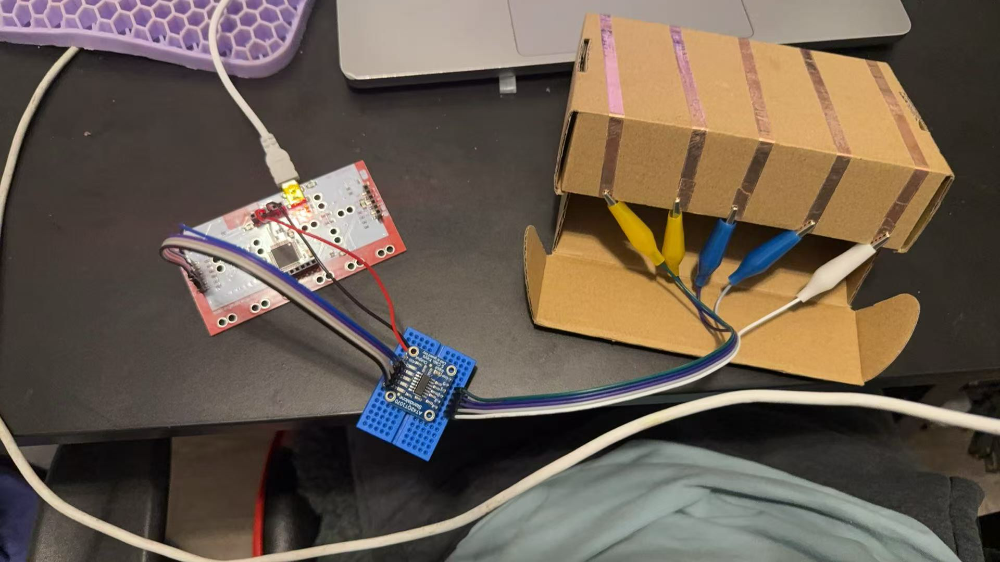

Read what each project does, then open the page.
Music Composition & Arrangement
作曲 · 编曲 · Composition · Arrangement

Original Music — Composition & Arrangement
As Antirender, I compose and arrange original tracks from scratch in Logic Pro. The workflow covers the full creative process: writing chord progressions and melodies (作曲 / Composition), then layering and structuring instruments — pads, arpeggios, bass, keys, leads — into a finished arrangement (编曲 / Arrangement). 36 original tracks across 7 self-released albums, published on Spotify and all major streaming platforms.
Decision Tools / Everyday Products
Decision Tools / Everyday Products
QuickPick
A lightweight random-decision tool that helps you pick between meals, drinks, desserts, and entertainment when you can’t decide.
All versions (3)
Smart Sleep Tracker
A daily tool built around sleep management — helping you figure out better sleep/wake times, track sleep debt, analyze your chronotype, and prepare for sleep.
UX Interaction
UX Interaction
Green Sheridan Garden Club Website Design
A responsive website designed for a virtual gardening community, focused on making content structure, navigation paths, and page hierarchy clear.
All versions (7)
- V1 — 1A / Website Documentation Site map, personas, content analysis, and user flow.
- V2 — 1B / Wireframe Version 1 Initial information hierarchy and navigation paths.
- V3 — 1B / Wireframe Version 2 Refined page organization and content distribution.
- V4 — 1B / Wireframe Version 3 Complete wireframe with structural precision.
- V5 — 2 / Finished Website Version 1 Fuller content and visual language.
- V6 — 2 / Finished Website Version 2 Refined content, visuals, and interaction details.
- V7 — 2 / Final Version Fully integrated content, layout, and visual presentation.
Visual System / Typography
Visual System / Typography
P1 — Letterform Construction, Classification and Use
A web project exploring letterform construction, paragraph typesetting, and type classification logic.
P2 — Grid Layout Exercises
Typography centered on packaging text and layout hierarchy, built around grid systems and bilingual content organization.
P3 — Typography on the Web
Translates typographer and designer research into a web experience. Combines designer research, typeface analysis, and front-end implementation.
Data Transparency
Privacy, Permissions / Data Transparency
Weather Advisor
Weather, Real Feel / Human-Centered Data
Interactive Prototype — Media, Motion & the Body
Copper Tape · p5.js · Makey Makey · WebGL

Media, Motion & the Body
A three-module exploration: P1 uses copper tape and LEDs to prototype wearable and non-wearable circuits; P2 collects sounds and builds p5.js visualisations culminating in an interactive audio header; P3 combines Makey Makey, touch-sensors, and WebGL to create a drum machine played with bare hands.
All modules (3) + live versions
- P1 — Circuits & FormstormingCopper tape, LED stickers, conductive materials.
- P2 — Sound & VisualisationSound library, 25 p5.js visualisations, Rainbow Bloom header.
- P3 — Touch-to-DigitalMakey Makey, 50 p5.js experiments, WebGL drum machine.
Physical Computing — Comfort Lamp
Arduino · DHT11 · 3D Printing · ProtoPie

Comfort Lamp — Sensor-Driven Ambient Object
A three-module Physical Computing project: from first Arduino blink to a finished ambient lamp housed inside a 3D-printed architectural scene. Temperature, humidity, and light data map to tiered colour states (BLUE → GREEN → YELLOW → RED); a latching touch switch gives physical on/off, and a ProtoPie mobile UI replaces the LCD for richer feedback.
All modules (3)
- P1 — Exploration & ConceptArduino basics, TouchDesigner, WGSN research, HMI statements.
- P2 — Sensor Build & PrototypeDHT11 circuit, tiered LED colours, LCD readout, guerrilla prototyping.
- P3 — 3D Housing & Final3D-printed enclosure, light sensor, touch switch, ProtoPie integration.